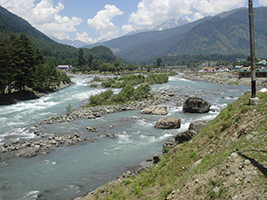
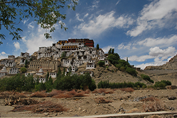

|
|
Kashmir is the northwestern region of theIndian subcontinent. Until the mid-19th century, the term Kashmir geographically denoted only the valley between theGreat Himalayas and the Pir Panjal mountain range. Today, it denotes a larger area that includes the Indian-administered state of Jammu and Kashmir (which consists of Jammu, the Kashmir Valley, and Ladakh), the Pakistan-administered autonomous territories of Azad Kashmir and Gilgit–Baltistan, and the Chinese-administered disputed regions of Aksai Chin and the Trans-Karakoram Tract. In the first half of the 1st millennium, the Kashmir region became an important centre of Hinduism and later ofBuddhism; later still, in the ninth century, Kashmir Shaivism arose.[1] In 1349, Shah Mir became the first Muslim ruler of Kashmir, inaugurating the Salatin-i-Kashmir or Swati dynasty.[2] For the next five centuries, Muslim monarchs ruled Kashmir, including the Mughals, who ruled from 1526 until 1751, and the Afghan Durrani Empire, which ruled from 1747 until 1820.[2] That year, the Sikhs, under Ranjit Singh, annexed Kashmir.[2] In 1846, after the Sikh defeat in theFirst Anglo-Sikh War, and upon the purchase of the region from the British under the Treaty of Amritsar, the Raja of Jammu, Gulab Singh, became the new ruler of Kashmir. The rule of his descendants, under the paramountcy (or tutelage) of the British Crown, lasted until 1947, when the former princely state became a disputed territory, now administered by three countries: India, Pakistan, and the People's Republic of China. |